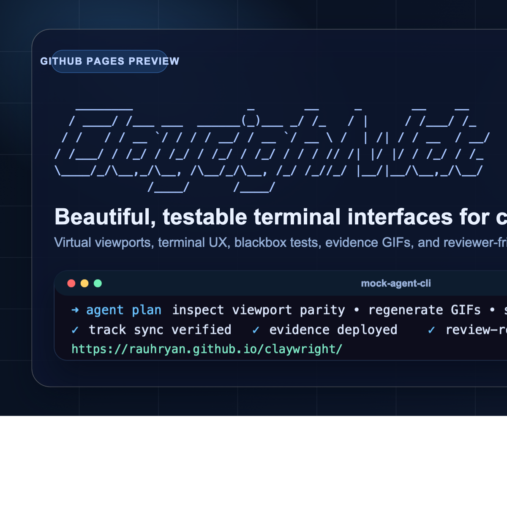
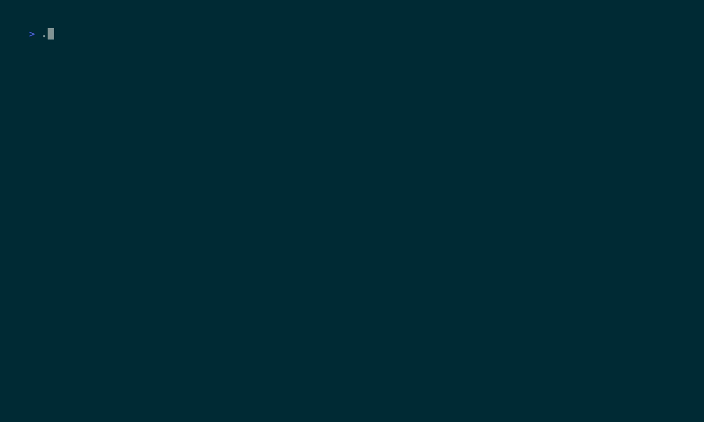
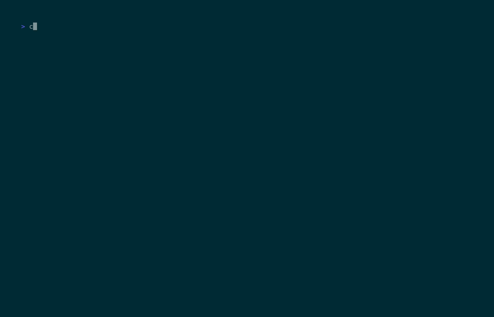
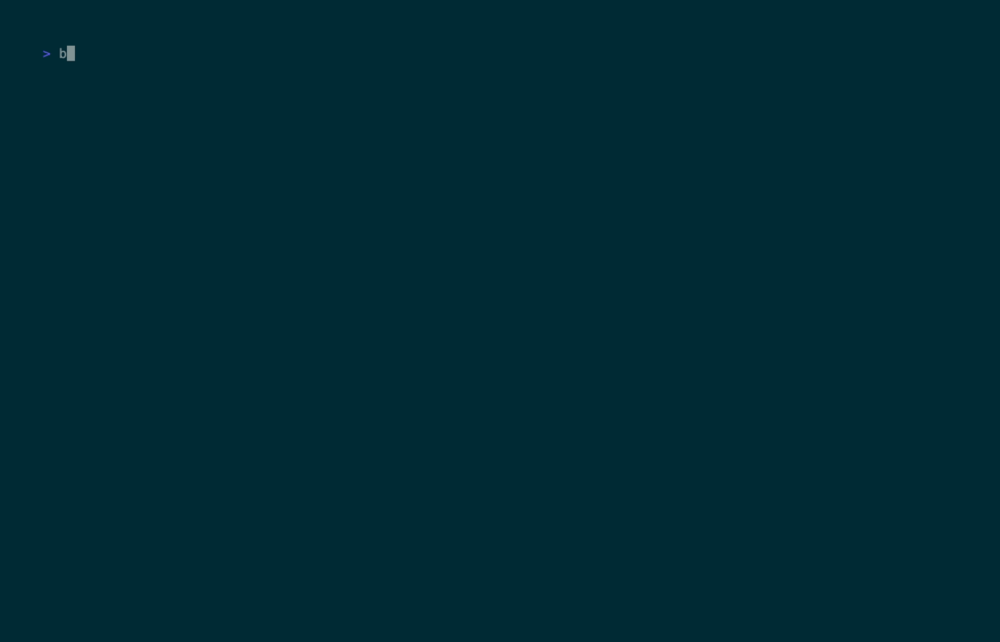

Open Graph card
Static social card with a terminal palette, ASCII-art Claywright masthead, a sharp tagline, and a mocked agent CLI frame.

This page presents the generated GIF evidence for the current Clayterm + Claywright unified virtual viewport implementation. It is intended to make design review, behavior inspection, and regression comparison faster than replaying each fixture manually.
evidence/gifs/
These captures complement the automated checks. The current workspace has passing Clayterm tests, passing viewport blackbox coverage, and generated GIF artifacts for manual review.
zig cc + wasm-ld.bun run evidence:vhs.cd claywright/packages/clayterm
make
deno task test
deno task test:bun
deno task test:bun:artifacts
cd claywright
bun test packages/solid-bindings/test/virtual-viewport-*.blackbox.test.ts
bun run evidence:vhsGitHub Pages now publishes a dedicated social preview set: a static Open Graph card for link unfurls and a mocked coding-agent terminal demo GIF for richer sharing and landing-page polish.
Static social card with a terminal palette, ASCII-art Claywright masthead, a sharp tagline, and a mocked agent CLI frame.

Animated terminal vignette showing a stylized Claywright session: planning, test verification, viewport rendering, and shipping the evidence site.

Each card links to the generated GIF, the source VHS tape, and includes a button to copy the CLI command used to launch the example locally. The current cuts intentionally linger on state changes a little longer so review is easier.
Shows wrapped text-stream virtualization, thumb movement, and scroll interaction inside the Clayterm demo.

cd claywright/packages/clayterm && deno task demo:scroll
Shows streaming transcript behavior, a longer browse-away pause, and a slower return-to-end follow restoration.
cd claywright && bun ./packages/solid-bindings/test/fixtures/virtual-viewport-auto-follow.tsx
Shows the reusable track/thumb component derived from viewport state with slower stepped navigation for easier visual comparison.
cd claywright && bun ./packages/solid-bindings/test/fixtures/virtual-viewport-track.tsx
Shows that visible rows stay rendered even while the configured materialization budget is exceeded.
cd claywright && bun ./packages/solid-bindings/test/fixtures/virtual-viewport-budget.tsx
Shows parent-constrained grow() sizing and the geometry-aware viewport bootstrap path.

cd claywright && bun ./packages/solid-bindings/test/fixtures/virtual-viewport-geometry.tsx
Shows large-history responsiveness without materializing the entire transcript at once.
cd claywright && bun ./packages/solid-bindings/test/fixtures/virtual-viewport-large-history.tsx
Shows transcript-style prepared text, wrapped multi-row items, ANSI-aware spans, and collapsed-thinking presentation.
cd claywright && bun ./packages/solid-bindings/test/fixtures/virtual-viewport-prepared-text.tsx
Side-by-side 50|50 layout: left column has a viewport without a track, right column has a viewport with a track. Verifies that adding a track does not break focus, scrolling, or exit behavior.
cd claywright && bun ./packages/solid-bindings/test/fixtures/virtual-viewport-track-parity.tsx
Shows a transcript-style thinking card with stronger framing, colored panels, an explicit collapse control, and enough trailing content to require scrolling.
cd claywright && bun ./packages/solid-bindings/test/fixtures/virtual-viewport-transcript-collapse.tsx
The page itself is static HTML. The GIFs are regenerated from the VHS tapes.
cd claywright
brew install vhs
bun run evidence:vhs:list
bun run evidence:vhs:check
bun run evidence:vhs{kind=link}
{kind=link}
{kind=link}
{kind=link}
{kind=link}
{kind=link}
{kind=link}
{kind=link}
{kind=link}
{kind=link}
{kind=link}
{kind=link}